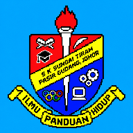

Super OPR
Tiada sambungan internet. Sambungkan semula untuk memuatkan senarai guru, menyimpan OPR dan membuka rekod daripada Google Sheet.
Cuba semula
Tiada sambungan internet. Sambungkan semula untuk memuatkan senarai guru, menyimpan OPR dan membuka rekod daripada Google Sheet.
Cuba semula